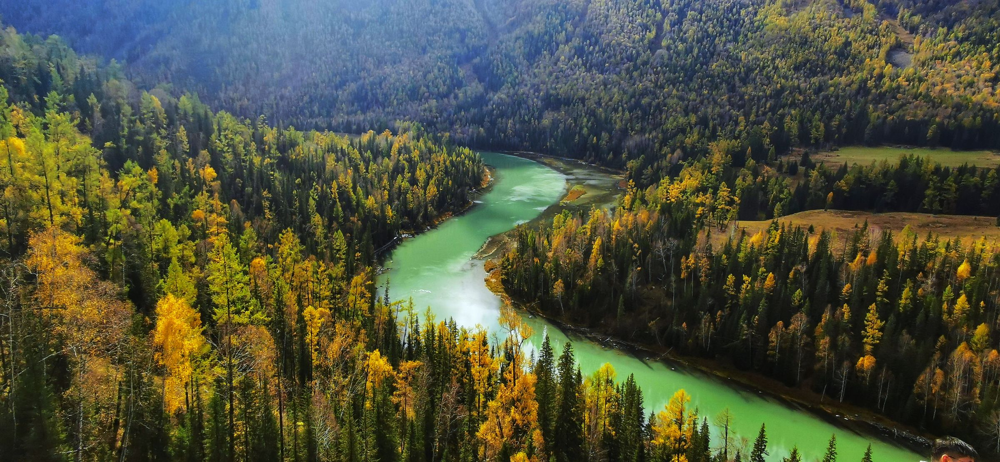
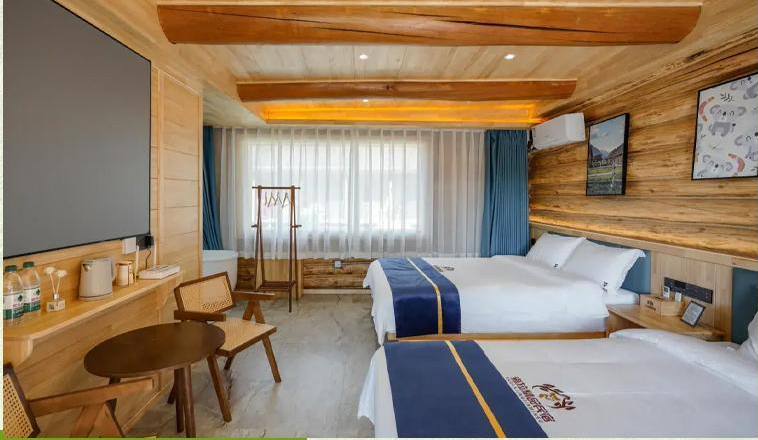
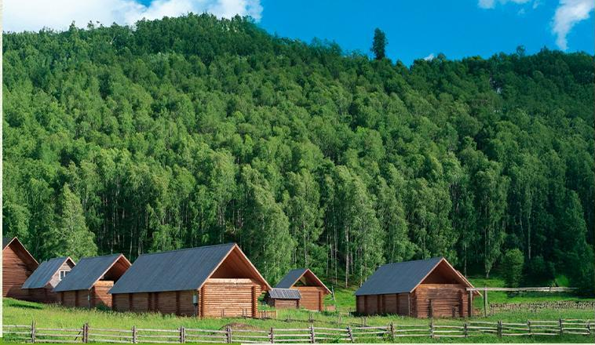
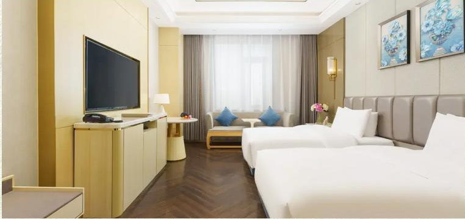
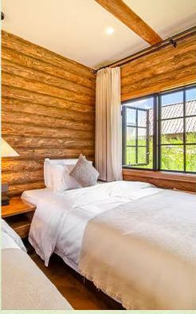
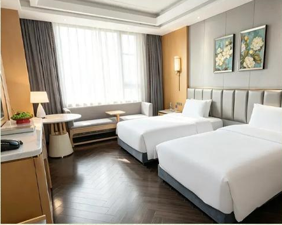
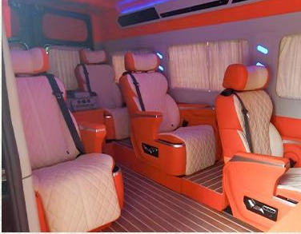

双湖串联
喀纳斯湖与赛里木湖；含赛湖自驾环湖与次日二进。
 2—6 人团
2—6 人团喀纳斯湖与赛里木湖；含赛湖自驾环湖与次日二进。
禾木与白哈巴各住一晚。
禾木轻旅拍每人 9 张简修照片，含简单民族服饰或配饰、不含妆造；赛湖跟车视频一团一条。
2 人成行，6 人封顶。七座营运商务车、1+1 独立座椅，纯玩无购物。



抵达日乌鲁木齐品质酒店
阿勒泰、克拉玛依、赛湖小镇及返程前乌鲁木齐
禾木与白哈巴各一晚





以下酒店或同级，不能指定入住；照片展示房型，不对应某一家酒店。

当地行程使用具营运资质的七座商务车，不指定车型。司机负责驾驶与行程衔接，不配导游。
乌鲁木齐 24 小时接送机／站；接送可能使用普通五座车或商务车。拼车旅客每日轮换座位，不固定乘坐位置。
24 小时接机或接站，抵达后入住酒店。管家提前联系并告知次日出发安排；酒店通常 14:00 后入住，早到可寄存行李、自由活动。
住：乌鲁木齐 · 携程五钻穿越 S21 沙漠高速，游克拉美丽沙山公园，途观乌伦古湖。前往将军山，体验落日缆车、夕阳派对与露天电影。
参考车程：530 公里 / 6.5 小时阿禾公路开放时穿行乌希里克、通巴森林和托勒海特大草原，换乘区间车进入禾木。安排轻旅拍及自然森系下午茶，夜宿景区特色木屋。建议将当晚必需品放入双肩包，轻装进入景区。
参考车程：300 公里 / 5.5 小时上午自由活动，可步行约 40 分钟登禾木观景台；午后换乘区间车游览喀纳斯湖，湖畔漫步，游船另付费。按行程安排携带身份证件办理白哈巴边防通行证，傍晚住进大窗特色木屋。
参考车程：200 公里 / 4 小时上午在白哈巴自由活动，随后换乘区间车返回喀纳斯，依次游览神仙湾、月亮湾、卧龙湾。可择一段栈道漫步，午餐后前往克拉玛依；当日车程较长，建议备好饮水和零食。
参考车程：570 公里 / 6 小时乘车前往赛里木湖，自驾环湖，从月亮湾、亲水滩、西海草原、克勒涌珠、松树头及网红 S 弯等点位中精选 3—4 处停留。安排一团一条赛湖跟车视频，晚住景区东门的赛湖小镇。
参考车程：500 公里 / 5.5 小时清晨再次进入赛里木湖，在月亮湾附近散步观景，随后返回乌鲁木齐。二进不安排再次环湖。
参考车程：550 公里 / 6.5 小时早餐后按航班或车次安排送机、送站。酒店需在 14:00 前退房；送机一般提前 3—4 小时，请提前与管家核对集合时间及返程交通。
住：返程日 · 不含住宿